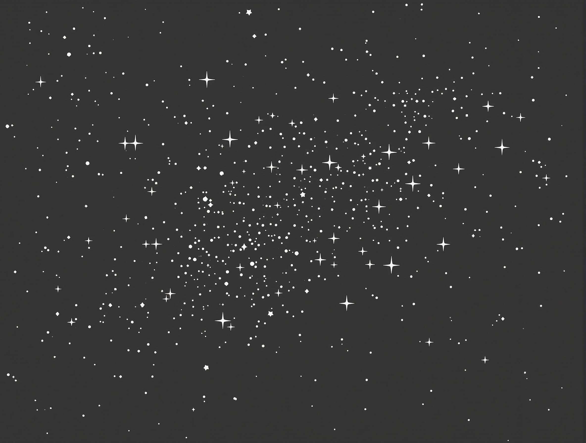

First Observations from the Euclid Telescope Released Early Release Observations (ERO) data released The European Space Agency’s (ESA) Euclid Telescope released its Early Release Observations (ERO) data to the public with its first science results on May 23, 2024. The data includes 17 initial observations of a wide range of objects in the universe, from nearby gas and dust clouds to distant galaxy clusters.
The release includes five new images, which showcase the unique combination of the Euclid Telescope’s wide field of view, incredible depth, and high spatial resolution. These images demonstrate Euclid’s ability to capture objects of all sizes, from star clusters to clusters with hundreds of galaxies.
Data release schedule Data releases from the Euclid Telescope are planned on the following schedule:
March 19, 2025: Euclid Quick Release 1 (Q1) data will be released, which will be the first worldwide data release.
April 4, 2025: The US National Science Foundation’s Euclid Science Center (ENSCI) will host an online tutorial on the Q1 data.
June 2026: A broader data release is planned.
Major data releases (DR1, DR2, DR3): Well-characterized and validated data will be released in three major data releases as the investigation progresses, culminating in DR3.
Scientific goals and accomplishments The Euclid Telescope is designed to create the most extensive 3D map of the large-scale structure of the Universe. The telescope plans to observe up to 10 billion galaxies to create a map of the large-scale structure of the Universe across space and time.
The first scientific results were announced in May 2024, but we won’t see the first results from Euclid’s wide-field, deep primary observations until the fall of 2024, and the first cosmology papers until at least the end of 2025.
Recent technical challenges and solutions The Euclid telescope has faced several technical challenges during its operation. In October 2023, a software patch resolved a problem with the micro-induction sensor that caused it to intermittently lose star tracking, which slowed its operation and could extend the mission’s duration.
In March 2024, ice formed on the telescope’s optics: water absorbed from the air during assembly on Earth turned to ice in space, affecting observations. ESA began working to remotely heat the telescope to remove the ice, and the solution worked better than expected, increasing sensitivity by 15%.
Features of the Euclid telescope and how it compares to other telescopes Euclid is a 1.2-meter space telescope with a 600-megapixel camera to record visible light, as well as a near-infrared spectrometer and photometer. The telescope features a silicon carbide (SiC) baseplate, and all of its instruments and telescope are mounted on it.
Compared to the Hubble Space Telescope, Euclid has a smaller primary mirror, which can resolve less detail, but the image quality is excellent and the field of view is large. While the James Webb Space Telescope (JWST) operates primarily in the mid- and near-infrared, Euclid operates primarily in the optical and near-infrared.
What’s unique about Euclid is that it has a very wide-angle camera, which performs exceptionally well even when compared to modern astrophotography. This allows it to see things that other telescopes cannot.
ERO Selected Projects and Scientific Results The Early Observing Data (ERO) program is an initiative of ESA and the Euclid science team, and involves one-day observations made before the start of the regular survey. These observations are not part of the regular survey and cover legacy science rather than Euclid core science.
In February 2023, a call for proposals was issued within the Euclid Science Collaboration (ESA, the Euclid Consortium, and independent legacy scientists), which resulted in the following six projects being selected
The Fornax galaxy cluster observed with Euclid - Principal Scientist: Ariane Lancon (Strasbourg Observatory) The Milky Way Globular Cluster as Seen by Euclid - Lead Scientist: Davide Massari (INAF-OAS Bologna) Free-floating baby Jupiters as seen by Euclid - Chief Scientist: Eduardo Martin (Institute of Astrophysics, Canary Islands) A Day in the Euclidean Universe through a Giant Magnifier - Principal Scientist: Hakim Atek (Paris Institute of Astrophysics) The Perseus Galaxy Cluster - Chief Scientist: Jean-Charles Quillandre (CEA, AIM, Paris-Saclay University) Euclidean Showcase of Nearby Galaxies - Chief Scientist: Leslie Hunt (INAF-AO Arcetri, Florence) The scientific results of these projects have been published in 10 scientific papers and include exciting discoveries of free-floating planetary objects in the Sigma Orion cluster, globular cluster populations around nearby galaxies, the discovery of new dwarf galaxies and low-surface-luminosity galaxies, the distribution of dark matter in galaxy clusters and intracluster light, and high-redshift gravitational lensing galaxies such as A2390.
Data processing and access methods The image data were processed using a processing pipeline developed by Jean-Charles Quillandre at CEA, AIM, and the University of Paris-Saclay. The pipeline is designed for low-surface-luminosity cosmology and standard point/compact source science, and is a direct legacy of the validated imaging pipeline developed at CFHT over the past 20 years for CCD and FPA mosaics.
The data released includes all products released on November 7, 2023 and May 23, 2024, and includes processed image stacks and validation catalogs for a total of 17 fields in the VIS Euclidean band. A total of 10 million unique sources were extracted from the VIS images.
The public can access ERO images of Abell 2390, NGC 6744, Dorado, M78, and Abell 2764 through ESASky. The May 23, 2024 ESA press release also includes direct links to the five full-view images.
International cooperation and the role of the Euclid Consortium The Euclid Consortium works with the European Space Agency (ESA) to plan, build, and now operate the Euclid Space Telescope mission. The consortium consists of more than 2,600 members, including more than 1,000 researchers from 15 European countries and more than 300 laboratories in Canada, Japan, and the United States.
The National Aeronautics and Space Administration (NASA) signed a memorandum of understanding with ESA on January 24, 2013, to participate in the mission. NASA provided 20 detectors for the near-infrared band instruments, which will work in parallel with cameras in the visible band. NASA also appointed 40 U.S. scientists to the Euclid Consortium, whose role is to develop the instruments and analyze the data generated by the mission.
Additional data released in October 2024 On October 15, 2024, ESA’s Euclid Space Telescope released a mosaic containing 260 observations taken in visible and infrared light. The mosaic covers 132 square degrees, which is equivalent to the size of about 260 full moons. It’s the first page of a giant 3D map of the universe that Euclid will provide in the future.